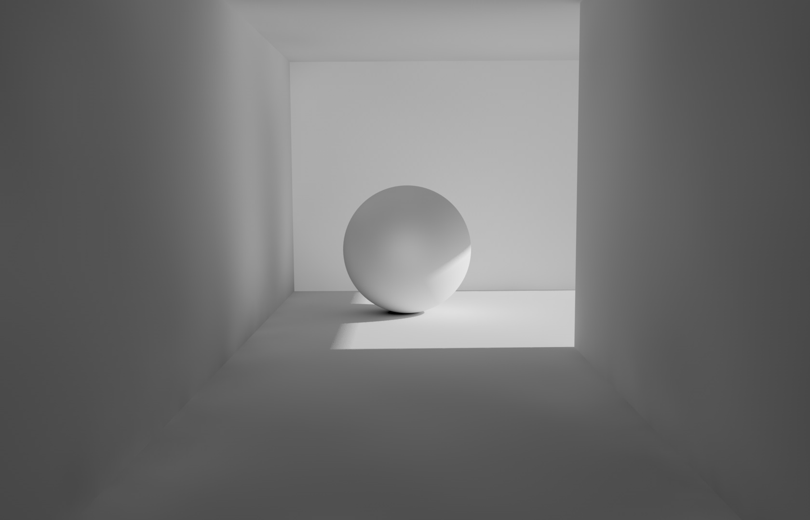

- UNREAL
- 3d-coat
- Global Mapper
- Coding
3d-coat
*.라이트맵 해상도를 낮출수록 UV아일랜드 사이 패딩을 늘려야 빛샘현상을 방지할 수 있다.

*.cube map(hdri)의 해상도는 2의 제곱이어야 함
hdri해상도를 높인다 해도 라이트맵 해상도가 스태틱 매시에서 너무 작으면 소용없다.
lighting > PostProcessVolume > Lightmass Settings 탭> Use Ambient Occlusion 체크.